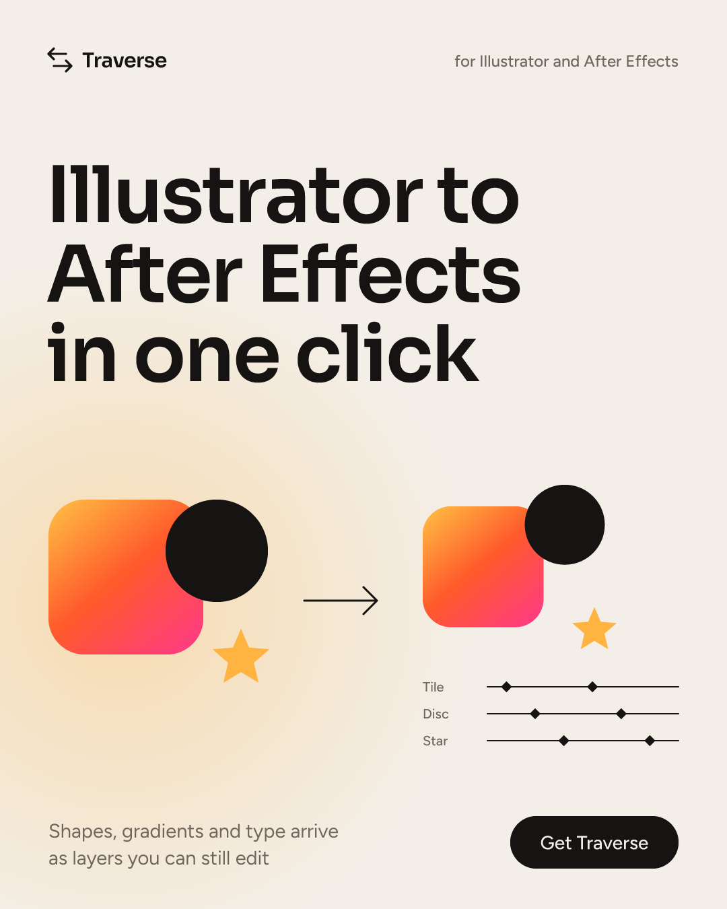
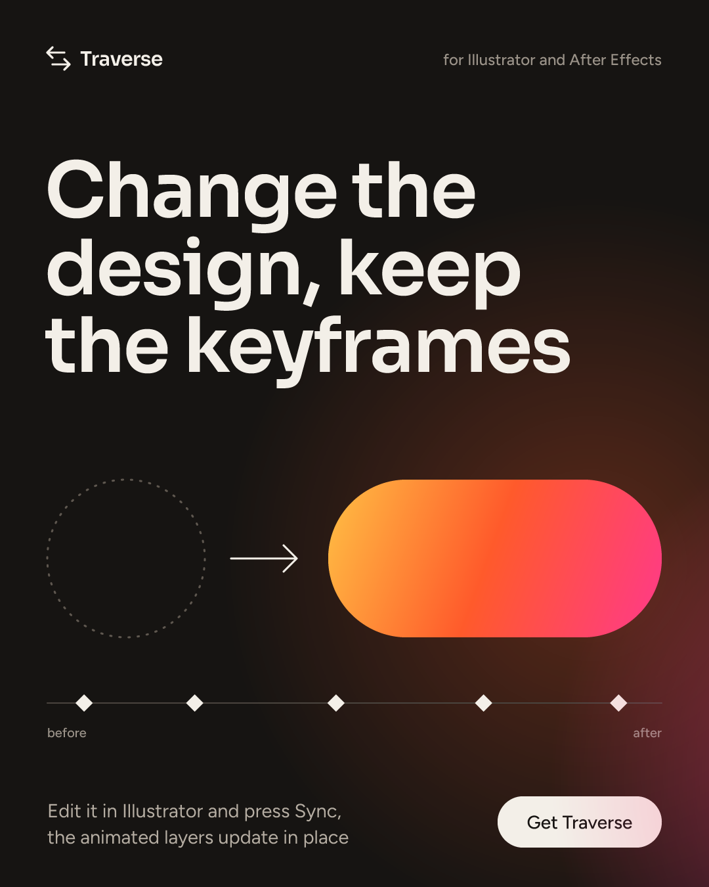
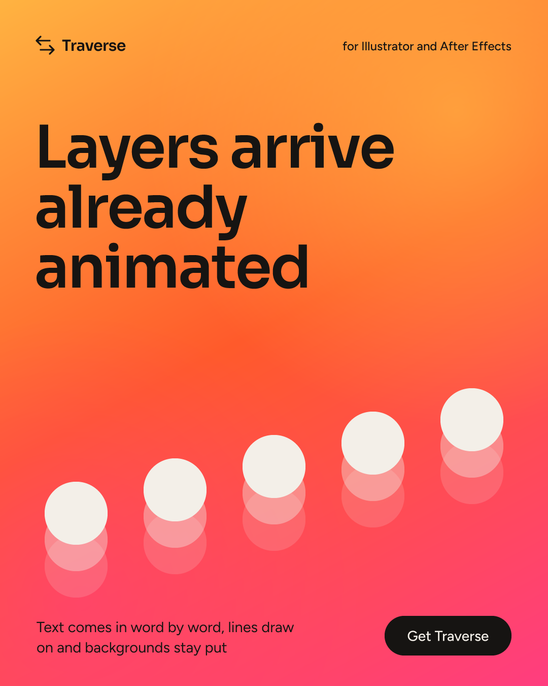

Select the artwork, press Push. It shows up in your comp as shape and text layers you can still edit, so you skip the import and the rebuild.


The client wants a different logo after you animated the old one. Fix it in Illustrator and press Sync. The layer in After Effects takes the new shape, colour or wording, and its keyframes, effects and parenting stay as they were.
Traverse looks at each layer and gives it a move that fits. Headlines come in word by word, lines draw on, small shapes pop, and the background stays still. Pick one of four styles and adjust from there.

Illustrator and After Effects 2026 on macOS. Gradients need After Effects 2026, and mixed text styles need 24.3 or newer. Windows is being tested.
No. You pay once and keep it.
Freeform gradients, meshes, patterns and live effects arrive as an image in the right place. Going from After Effects to Illustrator you get the current frame as vectors, without effects or animation.